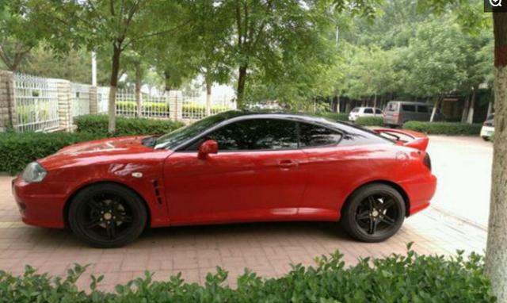
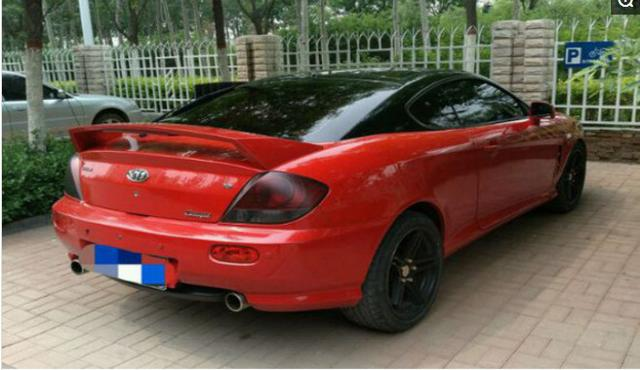
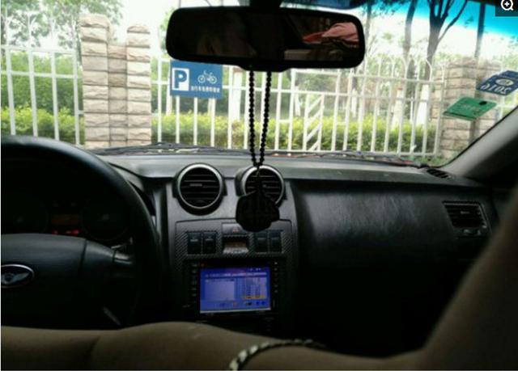

原标题：4万块钱买辆跑车 隔壁老王以为这是法拉利

说实话很多人都有一个跑车梦，但可以实现的少之又少，不要说几百万的法拉利兰博基尼，就连平民级的30万左右的跑车都难，但这种二手跑车还是可以拿下的。

这是小区的一位小伙最近新买的跑车，看这个侧面很难才出这是哪款车型，来自于现代家族的酷派跑车，车型是2005年的，已经有近12年的车龄，小伙花4万就拿下了。

虽然这辆跑车只花了4万就拿下了，但停在小区居民都认为小伙发大财了，买了一辆价值近百万的跑车，小伙这个时候就闷着笑了，确实这个外观的设计蛮漂亮的。
不难看出小伙对外观进行了全新的装饰，黑色的车顶贴膜搭配红色的车身视觉感很好，熏黑式的轮毂很有跑车范。

虽然可以满足日常的使用但内饰就有点寒酸了，充分的显示出了车龄，小伙说找个时间花个几千块重新的装修一下，要不然和外观就不搭配了。
责任编辑：